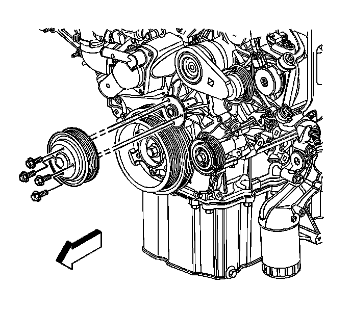
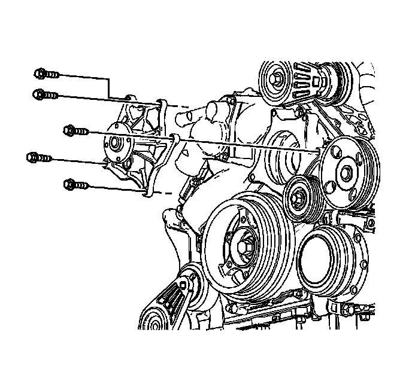

Water Pump Replacement
Water Pump Replacement (LH2 - Gas, 8 Cylinder, 4.6L, SFI, V8, DOHC, HO)
Removal Procedure

1. Drain the cooling system. Refer to Cooling System Draining and Filling (GE 47716 -Vac N Fill Coolant Refill Tool) (Service and Repair)Cooling System Draining and Filling (Static Fill) (Service and Repair) .
2. Remove the cooling fan. Refer to Engine Cooling Fan Replacement (LH2 - Heavy Duty Cooling) (Service and Repair) or Engine Cooling Fan Replacement (LH2 - Heavy Duty Cooling) (Service and Repair).
3. Remove the water pump drive belt. Refer to Water Pump and Air Conditioning Compressor and Power Steering Pump Belt Replacement (Water Pump and Air Conditioning Compressor and Power Steering Pump Belt Replacement) .
4. Remove the drive belt tensioner. Refer to Drive Belt Tensioner Replacement - Air Conditioning, Power Steering, and Water Pump (Drive Belt Tensioner Replacement - Air Conditioning, Power Steering, and Water Pump) .
5. Remove the water pump pulley bolts.
6. Remove the water pump pulley from the water pump.

7. Remove the water pump bolts.
Important: Use a catch basin to collect escaping coolant.
8. Remove the water pump and seal.
Do not reuse the seal.
9. Clean the water pump mating surfaces.
10. Clean and inspect the water pump. Refer to Water Pump Cleaning and Inspection (Overhaul) .
Installation Procedure
1. Install the water pump and NEW seal to the engine front cover.
Notice: Refer to Fastener Notice (Fastener Notice) .
2. Install the water pump bolts.
Tighten the water pump bolts to 10 N.m (89 lb in).
3. Install the water pump pulley to the water pump.
4. Install the water pump pulley bolts.
Tighten the water pump pulley bolts to 12 N.m (106 lb in).
5. Install the drive belt tensioner. Refer to Drive Belt Tensioner Replacement - Air Conditioning, Power Steering, and Water Pump (Drive Belt Tensioner Replacement - Air Conditioning, Power Steering, and Water Pump) .
6. Install the water pump drive belt. Refer to Water Pump and Air Conditioning Compressor and Power Steering Pump Belt Replacement (Water Pump and Air Conditioning Compressor and Power Steering Pump Belt Replacement) .
7. Install the cooling fan. Refer to Engine Cooling Fan Replacement (LH2 - Heavy Duty Cooling) (Service and Repair) or Engine Cooling Fan Replacement (LH2 - Heavy Duty Cooling) (Service and Repair).
8. Fill the cooling system. Refer to Cooling System Draining and Filling (GE 47716 -Vac N Fill Coolant Refill Tool) (Service and Repair)Cooling System Draining and Filling (Static Fill) (Service and Repair) .